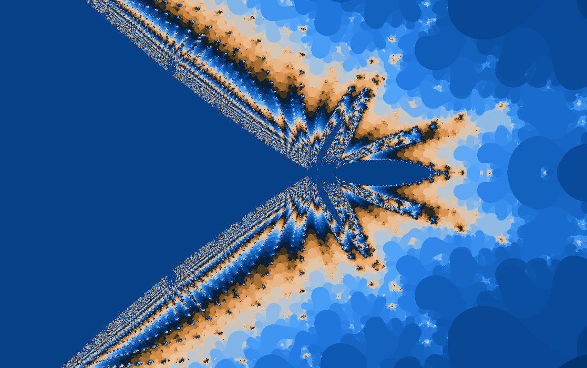
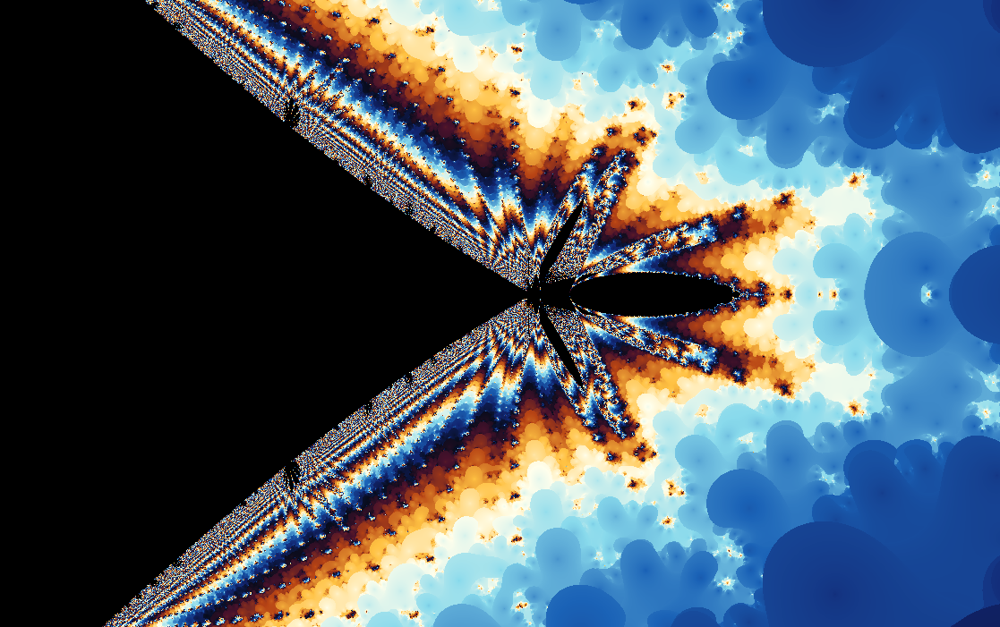
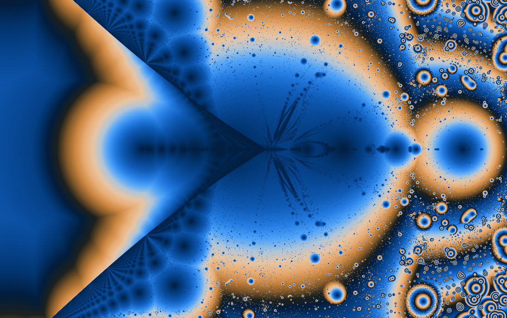
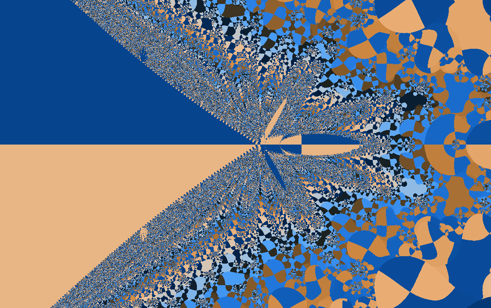
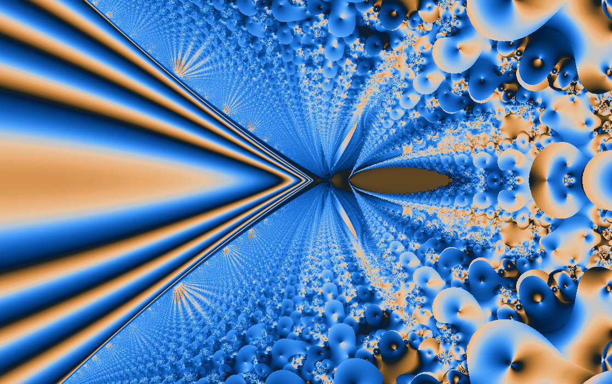
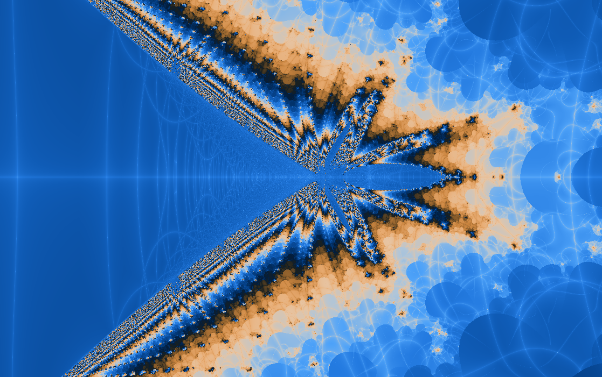

Experimental formulas
Fractory
A wxChaos original with a changing auxiliary term.
Fractory is less of a standard landmark and more of a workshop artifact. It mixes multiplication, division, and a sine-derived offset so the orbit carries an internal variable that keeps being reshaped.

What to try first
Start by treating the image as terrain: find ridges, basins, and borders rather than searching for a famous silhouette.
Turn on orbit display. App-specific formulas become much clearer when you can see the orbit path that produces the color.
Use orbit traps or triangle inequality coloring to make the internal motion visible.
Mathematical notes
The auxiliary value \(b\)
wxChaos initializes \(z=c\) and \(b=c-\sin(c)\). Each step updates the auxiliary value with \(b_{n+1}=c+b_n/c-z_n\), then updates \(z\) with \(z_{n+1}=z_n c+b_{n+1}/z_n\). The changing \(b\) acts like a small internal memory that makes the iteration less predictable than a one-line quadratic map.
Coloring lenses
The set stays the same, but each rendering method asks a different question about the orbit.


Gaussian integer
Measures how closely escaping orbits pass near the complex integer lattice.
Apply in wxChaos

Triangle inequality
Turns relationships inside the orbit into layered, topographic texture.
Apply in wxChaos
Orbit traps
Colors points by how closely their orbits pass near the real and imaginary axes.
Apply in wxChaos